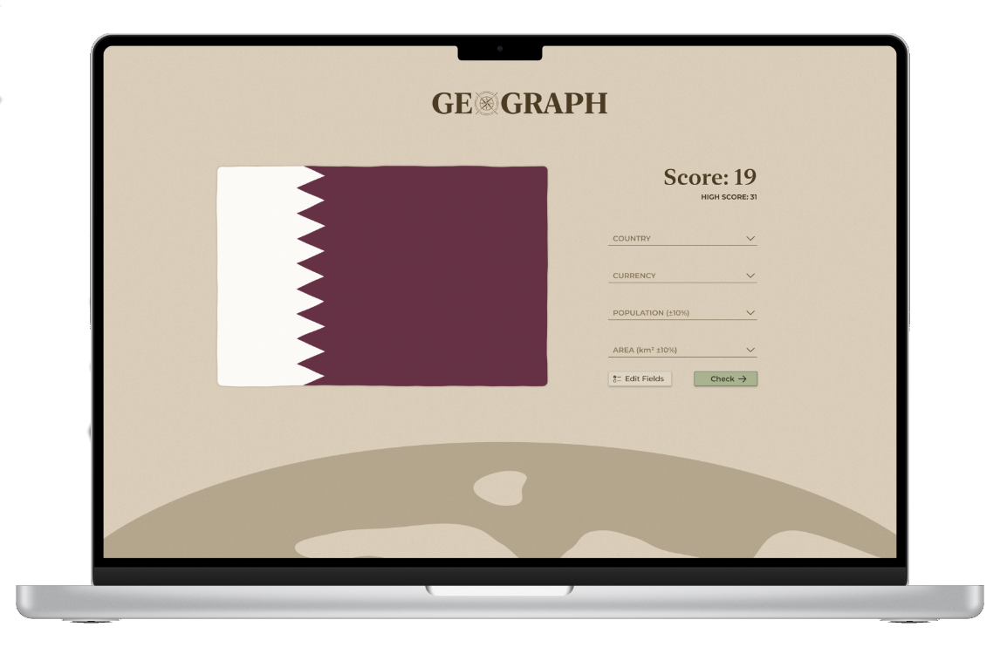
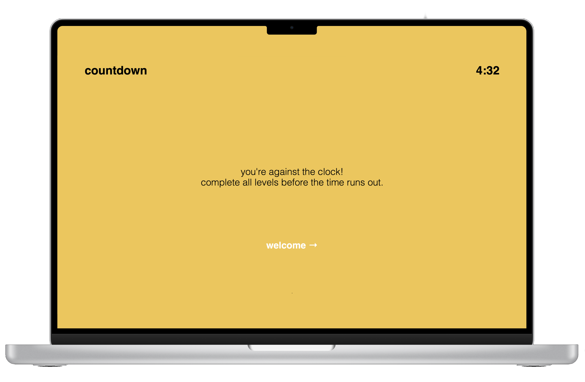

Geograph ↗
Geograph was designed to utiise the countries.dev API and transfor the information into an engaging geography-based guessing game.

Countdown ↗
This web-based game was developed as part of the University of Canberra's 4th Annual 24hr Digital Design Challenge. Countdown leverages a user's knowledge of browser features and intuition whilst they race against the clock.
